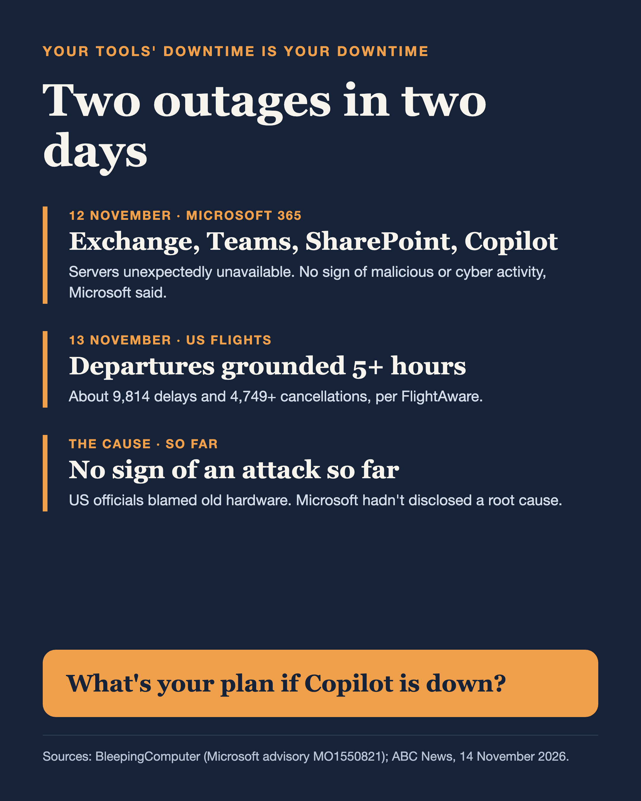

Two outages, one question
Microsoft 365 went down on 12 November, Copilot included. The next day, the US grounded departing flights for more than five hours.
Microsoft's advisory said customers might be unable to connect to Exchange Online, Teams, SharePoint Online, Microsoft 365 Copilot and Defender XDR. It pointed to servers being unexpectedly unavailable, which strained the rest, and said it found no indication of malicious or cyber activity. Recovery was gradual into the next day, and the root cause hadn't been disclosed when BleepingComputer last updated its report.
In the US, departing flights were grounded nationwide on 13 November, US time. The ABC reported FlightAware's count of about 9,814 delays and more than 4,749 cancellations on flights into and out of the US. Transportation Secretary Sean Duffy blamed old hardware, saying routers got overloaded with data, and officials said there was no sign of a cyber attack so far.
These are very different systems. But they make the same point for anyone running AI adoption: once a tool is part of how work gets done, its downtime becomes your downtime.
If Copilot or your email was down for a day, what would your teams do? I'd want a simple answer written down before the next outage, not during it.
